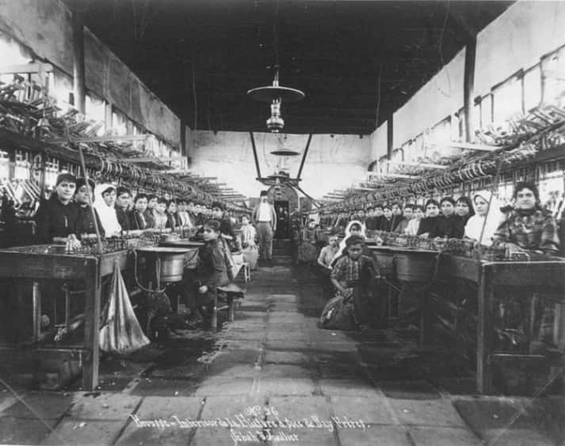

Konumuzun başlığı Osmanlı toplumunda aile olup, Osmanlı ailesi gibi bir terimi neden kullanmadığımızı belirtmek gerekir. Buna bağlı olarak Osmanlı toplumunda aile, evlilik gibi bir konuyu, İslâm fıkıh kitaplarını inceleyerek açıklamanın da mümkün olmadığı kanısındayız. Bu iki eğilime de konuyu ele alanlar arasında sıkça rastlanır, ama sorunu açıklamaya yetmeyen bir yöntemdir. Nasıl bir sosyolojik tasnif yapılırsa yapılsın “Osmanlı ailesi” gibi bir ayırım söz konusu olamaz. Bu aileyi İslâm fıkıhının esasları ve fıkıh kitaplarındaki bilgilerin ışığında değerlendirmek de, İslâm hukuku denen dalın niteliği yönünden mümkün görünmemektedir. Osmanlı toplumunda aile, kadın gibi sorunları incelemek için en önemli kaynak, imparatorluğun muhtelif dönemlerine ve bölgelerine ait şer’iyye sicilleridir, ikinci önemli kaynak, seyahatnâmeler ve nihayet bazı vekayinâmelerdeki bilgilerdir.
Ailenin temel üretim birimi olduğu bütün geleneksel toplumlardaki gibi, Osmanlı toplumunda da geniş aile tipi yaygındır. Bu geniş aile, üç kuşağın bir arada yaşadığı, ama yakın akraba ve kardeşlerin ailelerini de içeren daha geniş bir birleşik topluluğun üyesidir. Bu durum Osmanlı ülkelerindeki Müslümanlar kadar, gayrimüslimler için de söz konusudur. Osmanlı tahrir defterlerindeki kayıtlara göre, hane denen birimi meydana getirenlerin nüfusu beş kişi civarında hesaplanmaktadır. Ancak hanenin her zaman bağımsız bir aile olduğunu düşünmek hatadır. Çoğun bir avlunun etrafındaki konutlarda aynı ailenin üç kuşağına mensup haneler bir sosyo-ekonomik ünite halinde yaşarlar. Bu birliği çoğun, aynı mahallede bulunan yakın akrabalar tamamlar. Osmanlı mahallesinin sadece idarî değil, aynı zamanda birbirinin zincirleme kefili olan yakın insanlardan müteşekkil bir sosyal topluluk olmasında bu gerçek etkindir. Geniş ailenin bireyleri birlikte bir üretim birimi meydana getirirler. Toplumun büyük çoğunluğu olan köylülerin dışında kentlerdeki zenaatçılar için de aynı durum geçerlidir. Anonim sosyal kuruluşların gelişmediği toplumlarda aile üyeleri ve yakın akrabalar, bireyin doğumundan ölümüne kadar bütün toplumsal ilişkilerin çerçevesini meydana getirirler. Bireyin güvencesi kan bağıyla ait olduğu gruptur, ailesi için yaşar. Nepotizm (akraba kayırıcılık) her geleneksel toplumda olduğu gibi, Osmanlı toplumunda da her sınıf insanın kaçınılmaz olarak içinde doğup yaşadığı ilişkiler bütününü belirler.
Doğum, aile kadar mahallede de kutlanan ve herkesi ilgilendiren bir olaydır. Yeni bir üyenin topluluğa katılmasının “lohusa hamamı” gibi, küçük çocuğun okula başlamasının “âmin alayı” gibi, kendine özgü ritüeli vardır. Çocuk okumayı söktüğünde mükâfat olarak mahallesinde gezdirilir ve alkış toplar. Düğün, çocuk sahibi olma gibi olaylar ön planda ailenin ve mahalle sakinlerinin yakın ilgi konusudur. Birlikte üreten geniş aile, birlikte tüketir. Bünyesinde üç kuşağın bütün üyelerini barındıran geniş ailenin kadınları birlikte diker, birlikte kışlık yiyeceği hazırlar, birlikte gezer ve eğlenir. Ailenin erkekleri inşaat ve tamiratı, erzak alımını birlikte geniş aile için yaparlar. Çekirdek aile çoğun bağımsız bir ünite olarak yaşamaz. Karı ve koca ve çocukların, kendi dar aileleri için ayıracakları vakit ve enerji yoktur. Kuşkusuz geçen zaman ve kentleşme, Osmanlı toplumunda da bu tür aileyi ve ilişkiler sistemini değiştirecektir. Edebiyat aracılığıyla yakından tanıdığımız, 19. yüzyılın İstanbul ailesi her ne kadar bugünkü modern aile tipinden farklıysa da, eski aile yapısının temelden değişmeye başladığı açıktır. Osmanlı şehirlerinde konut bölgelerindeki ayırım ve biçimlenme ekonomik aidiyet ve statüye göre değil, dinî aidiyet ve statüye göredir. Bu nedenle kentin çevresinde dar bir bölgede yaşayan gayrimüslimler de aynı şekilde kendi geniş ailelerinin ve cemaatlerinin belirlediği ilişkiler çerçevesi içinde hayatlarını sürdürürlerdi. Birçok geleneksel toplumda olduğu gibi Osmanlı toplumunda da ayrı dinden gruplar arasında evlenme (intermarriage) pek azdı. Dinî hükümler, Müslüman erkeğe bu hakkı vermekle birlikte, gayrimüslim cemaatler de bu gibi gelişmeleri canla başla önlemekteydiler. Bazı yerlerde görevli Müslüman memurların veya tacirlerin geçici olarak Hıristiyan kadınlarla evlendiği görülmüştür (mut’a nikâhı). Ancak bu tür evliliklere de az rastlanmaktaydı.[78] Osmanlı toplumunda sanıların tersine polygamie’nin [çokeşlilik] yaygın olmadığı görülüyor. Bazı Avrupalı seyyahlar da bu durumu gözlemişlerdir. Örneğin 16. yüzyıl sonunda Türkiye’den geçen Alman Protestan papazı Salomon Schweigger şöyle demektedir:
Türkler ülkelere, karıları da onlara hükmeder. Türk kadını kadar gezen, eğleneni yoktur. Çok karılılık yoktur. Herhalde bu işi denemiş, dert ve masrafa neden olduğunu anlayıp vazgeçmişler. Boşanma pek görülmüyor. Çünkü boşanırken erkek para ve eşya veriyor ve kız çocuk anaya kalıyor.[79]
Geleneksel ailenin yapısı içinde en önemli üye kadındır. Fakat gerek aile içindeki gerekse toplumdaki statüsü, üretim fonksiyonu ile orantılı değildir. Kadının aile ve toplum içindeki statüsü çocuklarının sayısı ve yaşlılık ile yükselir. Geleneksel toplumda kadının özgürlüğünü söz konusu etmek niyetinde değiliz. Bu konuda kendi değer sistemimizle yapılacak bir yaklaşım geçerli ve gerekli değildir. Üretim sürecine kendi özgür kararıyla katılamadığı için, bu toplumda erkeğin özgürlüğünden söz etmek de mümkün değildir. Ancak kadının ailenin erkeklerine bağımlılığı evlilikten sonra da devam eder ve bir aileden diğerine transfer edilen üretici emek unsuru konumundadır. Bu transfer karşılığı ödenen değer, başlık, kalın veya başka terimlerle adlandırılır ki, genel sanının tersine, sadece Osmanlı-İslâm toplumuna özgü bir uygulama değildir. Çünkü İslâm hukukunda mehr iki kısımda ödenir (mehr-i muaccel, mehr-i müeccel) ve kadının kendisine ait olup, daha çok boşanma ve dulluk halinde ekonomik güvencesini sağlamaya yönelik bir edimdir. Oysa başlık, kalın gibi uygulamaların fıkıh kitaplarındaki hükümlerle ilgisi yoktur. İlk evlilik ve ekonomik bağımlılık yaşının küçük olduğu geleneksel toplumlarda, gelin için damadın böyle bir ödeme yapması yaygın bir gelenektir. Demek ki, bu gelenek ne sadece Türkiye’ye ve ne de diğer Arap ve İslâm ülkelerine özgüdür. Evlilikte bu tür ödemeler bütün geleneksel kırsal toplumlarda rastlanan bir özelliktir. Konu üzerinde bu yüzden yalnızca hukukî değil, sosyolojik yönden de durulması gerekir. O takdirde, hukukî mevzuatla toplumsal uygulama arasındaki ilişkiler anlaşılabilir.
Genellikle başvurulan açıklama, başlık veya Arap ülkelerindeki sada’k’ın İslâm hukukundaki mehr müessesesinin bir devamı olduğunun zikredilmesidir. Oysa başlık veya sada’k, Doğu toplumunda çok eski çağlardan bugüne az veya çok değişikliklerle ulaşmış, bu tür âdetler çoğu kez hukukî uygulamaya da konu olmuştur. Gelin için ağırlık ödeme oluyla evlenme, uygarlıkla birlikte doğal bir değişim geçirmiştir. Ailenin matriarkal (anaerkil) yapıdan patriarkal (babaerkil) bir yapıya geçişi de evlilik, boşanma ve miras konularında kadının eşitliğini kaybetmesi ve giderek kızın baba ve sair yakınları tarafından damat namzedine ağırlık karşılığı verilmesiyle sonuçlanıyor. Bu şartlar altında kurulan bir ailede patriarkal ve agnatique (baba ve hısımlığına değer veren) ilişkilerin hâkim olduğu her yerde görülür.
İslâmlıktan önce Araplar arasında mehr’e veya çeşitli biçimlerde ağırlık ödemeye dayanan evlilik gelenekleri vardı.[80] Bu gelenekler, patriarkal ve polygam bir aile yapısına uygundur. İslâm’dan önce mehr, kadının satış bedeli idi. İslâm dini bu âdeti bazı yeni düzenlemeler ve yasaklamalara bağlamış, özellikle mehr’i kadının almasını emrederek, kız babalarının veya akrabalarının almasını şiddetle yasaklamıştı.[81] Tatbikatta bu İslâmî hükümlere her yer, her zaman ve her topluluk arasında uyulduğunu söylemek güçtür. Eski tarz veya saptırılmış uygulamaların fıkıhın değil, toplumsal ve ekonomik şartların zorlamasıyla geniş çevrelerde yaygınlaşması mümkündür.
İslâm hukukuna göre mehr iki kısımda verilir: mehr-i muaccel ve boşanmada veya eşin ölümünde terekeden alınacak mehr-i müeccel. Nikâhın geçerli olması için mehrin verildiğine dair zevcenin rızası mahkeme sicilinde sabit olmalıdır. İslâm hukukçuları “mehr”in asgari miktarında anlaşamazlar. Yaygın miktar, genellikle 10 dirhem gümüştür. Mehr evlenen kızındır. Onunla cihaz yapmaya, ne kocası ne ebeveyni tarafından zorlanabilir.[82] Oysa şer’î hukukun bu konudaki hükümleri göz önüne alınıp Osmanlı toplumundaki uygulamalara bakıldığında, genellikle şeriat arasında uyuşmazlık göze çarpmaktadır. Örneğin, 16. yüzyıl Ankara, Çankırı, Kayseri ve Konya şer’iyye sicillerindeki hükümleri dört Sünnî mezhebin hükümleriyle karşılaştırdığımızda, o çağda Anadolu’daki evlilik uygulamasının her zaman İslâmî içtihadla bağdaşmadığı görülüyor. Bu gibi belgelerin ışığı altında 16. yüzyıldan beri Osmanlı toplumunda evlilik ilişkilerini (nikâh, boşanma, evlilik dışı ilişkiler) ele alacağımız bu makalede, bu nedenle görebildiğimiz bu uygulamanın İslâmî hukuk hükümleri ile zaman zaman karşılaştırmasını yapmakta da fayda vardır.
Osmanlı İmparatorluğu’nda şer’î hukukun özellikle kamusal alanda ve toprak düzeninde yerini geniş ölçüde örfî hukuka bıraktığını biliyoruz. Bugünkü ayırıma göre, özel hukuk alanına giren düzenlemelerin ise şer’î hukuka bırakıldığı çok tekrarlanmasına rağmen, biz aynı kanıda değiliz. Özellikle aileye ilişkin, evlenme-boşanma gibi konularda şer’î hükümlerin dışına çok çıkıldığı, Ortodoks şeriat anlayışından uzak uygulamaların bolluğu ile anlaşılmaktadır. İdarî ve cezaî alandaki örfî hukuk düzenlemeleri dışında aile hukuku alanında da şeriat dışı uygulamaların araştırılmasına devam edildiğinde, zengin ürünlerin saptanacağına kuşku yoktur. Farklı uygulama daha çok yerel örf ve âdetin etkisinden dolayı olmaktadır. Osmanlı kadısı tayin edildiği ve kısa müddet kaldığı bölgede standart hukuk kurallarını ısrarla uygulamaktan kaçınmaktadır. Kadıya göre, yerel düzene ve geleneklere uymak, yerel düzeni bozup karışıklığa neden olmaktan yeğdir. Osmanlı fukahâsı aileye ilişkin konularda (ferâiz veya ahkâm-ı nikâh) bir risale kaleme aldıklarında, klasik İslâm fakihlerinin eserlerini sadakatle tekrarlamanın dışına çıkmayı hiç denemedikleri halde, uygulamada bu kadar Ortodoks davranmamaktadırlar. 16.-17. yüzyıllarda Orta Anadolu’da başlık veya kalın benzeri geleneklere mahkemelerin de itibar ettiği görülüyor. Gene boşanma ve zinaya ilişkin davalarda da Osmanlı hukukçusu klasik İslâmî hükümlerin sertliğine uymamış ve daha mutedil davranmış görünüyor. Kuşkusuz ele aldığımız şer’iyye sicillerinde böyle farklı uygulamalar kadar İslâmî mehr konusundaki hükümlere uygun kayıtlar da görülüyor. Örneğin, evlenme her yerde mahkeme siciline kaydedilmekteydi. Bu usulün yaygın olduğu anlaşılıyor. Aksi takdirde kadın ve erkek, “nikâhsız yaşadıkları” gerekçesiyle, mahkemeye celbediliyor ve bu gayrimeşru durumları mahkeme sicillerine kaydediliyordu.[83] Osmanlı ailesinde hiç değilse bazı yerlerde evlilik içinde karı-koca mal ayrılığı rejiminin esas olduğu anlaşılıyor. Jennings bu durumu 18. yüzyıl Kayseri’sinde saptamıştır.[84] Yukarıda sözünü ettiğimiz İslâmî nikâh hükümleriyle pek bağdaşmayan geleneklere en iyi örnekler 16. yüzyıl Orta Anadolu bölgesinden seçilmiştir. Bu devre ait Ankara mahkeme-i şer’iyye sicillerinde, nâmzedlik denen bir evlenme geleneğinin geniş ölçüde uygulandığına dair kayıtlara rastlanmaktadır.[85] Kız çocuk daha küçük yaşlarda babası tarafından birine vaat edilmekte ve karşılığında para veya mal alınmaktadır. Bu para baba tarafından kullanılır ve kız, yaşı erince nâmzed olduğu gence verilir. Sicillerde eşlerin ayrı yaşaması veya ortak yaşamlarının bitişi için zindegâne olmama tabiri kullanılıyor. Ortodoks uygulamanın tersine, bazı yerlerde kadın kocasının evini terk edince dönmesi istenmezdi.[86] Bu durumlarda belirtildiği üzere bazen zevce mehr-i muaccel ve nafaka hakkından vazgeçerdi. Zevci tarafından boş olduğu söylenen kadının yeniden evlenmek için şer’î hukuka uygun olarak iki ay beklemesi genel bir uygulama gibi görülüyor.[87] Nafaka, sırf boşanma halinde değil, eşin evi terk etmesi veya masrafları karşılamaması halinde, zevcenin mahkemeye müracaatı üzerine bağlanmaktaydı.[88]
Bütün geleneksel toplumlarda olduğu gibi, 16. yüzyıl Osmanlı toplumunda da evlilik dışı ilişkiler, nesebi gayrisahih çocuk doğurmak gibi olaylar tepki ile karşılanıyordu. Namus sözünün Yunanca nomos’dan geldiğini hatırlamak, toplumların bu konudaki ortak tutumunu görmek için yeterlidir. Ancak, bu konuda 16. yüzyıl Osmanlı toplumunun eski Doğu toplumlarının katı ceza uygulamasını terk ettiğini söylemek gerekir. İslâm hukukuna göre, zina yaptığı sabit olan kadın, eski İbranî hukukundakine benzer bir hükümle, taşlanırdı. Buna recm deniliyor. Ancak, daha ilk dönemde bu cezanın uygulanmasını adeta imkânsız hale getiren hükümler göze çarpıyor. Zinanın subutu için dört erkek şahit gerekiyordu. Kocasının zina isnadına rağmen kadın, yemin ve inkâr yoluna saparsa kurtulabilirdi.[89] Bu hüküm Osmanlı hukukunda kabul edilmiş, kadılar genellikle “zinanın subut ettiği” hükmüne varmamışlardır. Mahalleli uygunsuz ilişki kuran insanların evine baskın yapıp onları teşhir ve alayla mahkemeye getirdiklerinde, verilen hüküm “zina isnadı” şeklindedir ve kürek ve hapis cezaları verilmiştir.[90] Recm cezası Osmanlı tarihinde, taassup hüküm sürdüğü bir dönemde, bir kere verilmiş ve uygulanmış, ancak hiç hoş karşılanmadığı için bir daha tekrarlanmamıştır. Miladî 1680 yılında, İstanbul’da Aksaray’da kocası seferde olan bir kadının, ipekçilikle geçinen bir zımmî gençle zina halinde yakalandığı iddia edildi. Mahkeme kadının recm edilmesine, delikanlının da idamına hükmetti. Rumeli Kazaskeri hükmü istemeyerek tasdik etmiş, bu hüküm ve olay ulemâ arasında nefretle karşılanmıştı.[91] Bir daha da böyle ceza verilmedi.
Babasız çocuk doğuran veya nikâhsız yaşayan kadınlar toplumca hoş karşılanmamış, şehrin asayiş amirinin gözetimine bırakılmışlardı. Örneğin, 16. yüzyıl sonlarında taşrada da bu gibi kadınların derhal subaşına teslim edildiklerini görüyoruz.[92]
Osmanlı şehirlerinde konut bölgesinde bekâr nüfusun bulundurulmamasına gayret edilirdi. Büyük şehir İstanbul’da bile, çalışmak için gelen bekâr erkek nüfus, merkezî iş bölgesindeki bekâr hanlarında barındırılır ve bir tür gözetim altında tutulurdu.
Aile Yapısında Dönüşüm
Osmanlı İmparatorluğu’nun son yüzyılı reformlar dönemidir. Bu reformların temel amacı, çokça belirtildiği gibi ordunun modernleştirilmesi olabilir ama 19. yüzyılın devlet adamı malî, adlî ve idarî alanda da bir bütün olarak modernleşmenin gereğini anlamıştı. 19. yüzyılın reformcuları Osmanlı tebaasının can ve mal güvenliği içinde, kanun ve nizam egemenliği altında yaşamasını istiyorlardı. Bir toplumda değişme başladığında bu değişim, öngörülen alanlar kadar, öngörülmeyen alanlara da sıçrar. Bu nedenle Avrupa uygarlığı orduda, maliyede, yönetimde olduğu gibi kültürde, edebiyatta, günlük yaşamda da Osmanlı toplumu için model oldu. Tanzimat dönemi, Osmanlı toplumunda yeni bir insan tipinin ortaya çıktığı devirdir. Kuşkusuz 19. yüzyılda Osmanlı toplumu köklü büyük bir değişim geçirmiyordu, ama her alanda bir modernleşmenin başladığı tartışılmazdı.

Bursa’da bir ipek atölyesinde çalışan kadınlar, Fotoğraf: Sébah & Joaillier, 1890.
Tanzimat döneminde Osmanlı kadını için de kayda değer gelişmeler başlamaktadır. Osmanlı kadınının hayatı ayrı bir renge bürünmüştür. Bu renk değişikliğini sadece modadan, günlük yaşamdan, tüketim kalıplarındaki farklılaşmadan, yabancı dil öğrenmek veya piyano çalmak gibi yeni zevklerden ibaret görmemek gerekir. 19. yüzyılda Osmanlı ülkelerinde tarımda, eğitimde görülen bazı yapısal değişmeler ve bütün dünyanın yaşadığı haberleşme ve teknolojideki devrimin Osmanlı topraklarına da yansıması, klasik aile yapısını büyük şehir kadar, kırsal alanda da yavaş yavaş değişim geçirmeye zorlayacaktır. Nihayet Ortadoğu ülkelerinde kadının özgürleşmesi sorunu bu dönemin modernleşme ideolojilerinde önemli yer tutar. İslâmcı modernleşmeci akımdan, liberal düşünceye kadar bütün Ortadoğu düşünürleri klasik ailenin yapısı, kadının toplumsal yeri üzerinde duruyor ve değişiklik öneriyorlardı. 19. yüzyılda Rumeli eyâletlerinde Batı Avrupa pazarına yönelik tarım üretimi ve yarı mamul madde ihracına yönelik manifaktür gelişmekteydi. Bu bölgedeki demografik hareketler üzerine yapılan tarih araştırmaları, sözünü ettiğimiz değişimin başladığını göstermektedir.[93] Şehirlerde küçümsenmeyecek bir büyüme dolayısıyla aile yapısında da modernleşmenin başlaması kaçınılmazdı. Anadolu kıtasında da, Türkiye’nin sosyal tarihi içinde önemli bir değişme başlamaktaydı. Çukurova, Amik, Maraş yörelerinde aşiretlerin iskânı dolayısıyla göçebe nüfus yeni bir hayata geçmekteydi. Nihayet yüzyılın ortasında Ege bölgesi, ardından Çukurova’da başlayan monokültürel tarımın yarattığı toprak işçiliği kırsal kesimdeki ailenin geçimini ve yapısını etkilemeye başlayan gelişmelerdi. Kırsal kesimde bu dönüşümü başlatan faktörlerden biri de 1858/1274 tarihli Arazi Kanunnâmesi’dir. Arazi Kanunnâmesi, çoktan beri dağılan klasik arazi rejimini yeni bir gözle hukukî yönden düzenlemek, tarımda özel girişim ruhunu teşvik etmek için çıkarılmıştır. Gerçi Kanunnâme’nin çok çabuk ve etkin bir biçimde özel mülkiyet düzenini gerçekleştirdiğini, hele küçük ve orta sınıf çiftçiliği güçlendiren etkileri olduğunu söylemek güçtür; fakat tarım topraklarının mülkiyeti ve miras konularında yenilikler getirmediği de söylenemez. Arazi Kanunnâmesi’ni burada ayrıntılarıyla ele alacak değiliz. Ancak işlenen toprakların tapulandırılması ve miras yoluyla intikali ister istemez kırsal kesimdeki büyük aileyi parçalayacak bir süreci başlattı. Bundan başka, arazinin miras yoluyla intikalinde kız evlât da erkeklerle eşit pay alacaktı ki, bu hukukî yönden önemli bir gelişmedir. Modern tarım yapılan ve pazara açılan bölgelerde yeni arazi rejiminin süratle etkisini gösterdiğine kuşku yoktur. 19. yüzyılda tarımsal alanda gördüğümüz bu gelişmeleri nicel olarak, 1920’lerin, hele 1940’ların Türkiye’sindeki büyük yapısal değişiklikle kıyaslayacak ve eş tutacak değiliz, ancak niteliksel bir değişimin başladığı açıktır. 19. yüzyılda kırsal bölgelerden ülkenin İstanbul, Beyrut, Selanik gibi büyük şehirlerine yapılan göçte de niteliksel bir değişim gözlenmektedir. Daha önce büyük şehre bekâr nüfus göç eder ve kısmen mevsimlik olarak kalırken, artık çeşitli nedenlerle aile göçlerinin başladığı görülüyor. İstanbul’un surlara yakın kesiminde, Haliç civarında ilk gecekondulaşma başlamaktaydı. Bu olguları şehirleşme ve çekirdek aileye geçişin başlangıcı olarak nitelemek, abartma sayılmamalıdır.
Fatma Aliye Hanım.
Tanzimat döneminin getirdiği sosyo-kültürel değişim, hiç değilse üst ve orta tabaka kadının toplumsal hayata girişini hazırlayan altın bir dönem olmuştur. Modern İslâmcı düşünürler çokkarılı evliliğin kalkmasına ya da sınırlandırılmasına yönelik yeni yorumlar getirirken, gerek Osmanlı ülkesinde gerek diğer Ortadoğu ülkelerinde ve Rusya periferisindeki düşünür ve yazarlar geleneksel aile yapısı ve evlenmelerin aleyhinde kampanya açmışlardı. İbrahim Şinasi Bey, modern tiyatromuzun ilk eseri sayılan Şair Evlenmesi’nde biraz naif bir üslûbla eski evlilik geleneklerini yererken, Azerî dramaturjisinin kurucusu Mirza Fethali Ahundov ve izleyicileri tiyatro yapıtlarında İslâm kadınının kapalı hayatını, pederşahî aile düzenini, kız çocuklarının cahil bırakılmasını en etkin biçimde yeriyorlardı. 1880’lerde Rusya Müslümanlarından bir grup kadın, Âlem-i Nisvân adlı bir kadın gazetesi çıkararak, feminist hareketi yaygınlaştırmak çabasındaydılar. Tanzimat maârifinin en önemli girişimlerinden biri, ortaöğretim alanında inâs rüşdiyeleri açarak kız çocuklarının eğitim olanağını geliştirmek olmuştur. Kız okullarının sayılarının artması ve 19. yüzyıl sonunda eğitim derecesinin liseye kadar yükselmesi ise, yeni bir meslek grubunun ortaya çıkışını sağladı: Muallime hanımlar... Kadının özgür çalışma hayatına girişi, Türkiye tarihinde sanayiden önce eğitim alanında olmuştur ki, bu gelişme günümüz Türkiye’sinde kadının bürokrasideki güçlü durumunun bir nedenidir.[94]
Tanzimat dönemindeki kültürel açılımla ortaya çıkan yeni aydın grubunun üyeleri arasında üst sınıftan kadınlara da rastlanmaktadır. Cevdet Paşa’nın kızı Fatma Aliye Hanım bu tip aydınların prototipidir. Büyük kentlerde kadın evin dışına çıkmıştır. Boğaziçi’ndeki mehtap gezilerinden, Beyoğlu’ndaki alışverişlere kadar birçok yerde kadının toplumsal hayata girişini, Tanzimat’ın devlet adamlarından Cevdet Paşa, zenperestliğin ve muâşakanın artması olarak nitelendirir.[95] Sanayileşme ve kentleşmenin yavaşlığına rağmen toplumda kadının 19. yüzyıldan beri ılımlı bir özgürleşme sürecine girdiği görülüyor. Sanayileşen Avrupa’da kadın özgürlüğün bedelini çok pahalı ödemiş, toplumsal hayatta yeni güçlüklerle karşılaşmıştır. Benzer bir gelişme ülkemiz kadını için henüz başlamaktadır; ama koşulların farklılığından dolayı Türkiye’de kadının özgürlük için ödediği bedelin Avrupalı kadınınki kadar ağır olduğu söylenemez. Bu farklı koşullar, yakın tarihimizdeki reformların, sanayileşmeden önce özgürlük için uygun bir zemin hazırlamasından ileri gelmektedir.
Tanzimat döneminin devlet adamları mevcut aile hukuku ve evlenme âdetlerinin sorunlar yarattığının farkındaydılar. Bu konudaki yasama programları Sadrazam Mehmed Emin Alî Paşa’nın Fransız Medeni Kanunu’nu kabul etme girişimine kadar varmaktadır, ama toplumsal yapı buna müsait olmadığından, geleneksel evliliği düzenlemek için bazı ferman ve tenbihler çıkarmakla yetinmişlerdir. Prof. Şerafettin Turan’ın incelediği bu ferman ve tenbihler, esas olarak, evlenme sırasında başlık ödemeyi yasaklamakta, ağır masrafların yapılmasını önlemek istemekteydi.[96] Ferman, Cemaziyelâhir 1260 /Haziran-Temmuz 1844 tarihli olup,
1) Reşit kız evlâdın kendi arzusuyla evlenebilmesini, ebeveynin müdahale etmemesini,
2) Başlık gibi ağırlıkların (tekâlif denmekte) kaldırılmasını ve ebeveyne bu gibi ödemelerin yapılmamasını emrediyor.
On sekiz yıl sonra 23 Rebiülevvel 1279 /18 Eylül 1862 tarihinde, sözü geçen fermanın uygulanmasıyla ilgili hükümet tenbihleri neşredildi. Bu tenbihler on maddeden ibaret olup, düğünlerde israfı yasaklıyor, başlık kaldırıldığı gibi, mehr-i muaccel ve mehr-i müecceli fakir, orta, zengin sınıflar için yüz kuruş, beş yüz kuruş ve bin kuruş olmak üzere üç kategoride tesbit ediyordu. Çok fakirler hiçbir şey vermeyecekti. Böylelikle evliliğin kolaylaştırılması istenmekteydi. Tenbihler bunun dışında damadın düğünden sonra karısının akrabalarına hediye vermesi usulünü kaldırmaktadır.[97] Bundan başka düğünler de; birinci, ikinci, üçüncü sınıf olarak üç kategoriye ayrılmakta, her biri için ne kadar masraf yapılacağı ayrıntılarıyla belirtilmektedir. Bu tenbihlerin Kurtuluş Savaşı sırasında T.B.M.M. hükümetinin çıkardığı 1336/1920 tarihli ve 55 sayılı Düğünlerde Men-i İsrafat Kanunu’nu andırdığı görülmektedir. Kuşkusuz ferman ve tenbihlerin yaşayan gelenekleri ortadan kaldırdığı söylenemez, ama daha ziyade bunların var olan belli bir gelişmeyi, bir eğilimi yansıttığı da açıktır.
19. yüzyılda ülkemiz açısından önemli bir hukuk yapıtı olan Mecelle, bilindiği gibi aile hukukuna dair hükümleri içermemektedir. Ancak, yukarıda değindiğimiz ferman ve tenbihler, aile ve evlilik kurumunu modernleştirme eğilimlerinin güçlendiğini göstermektedir. Bu dönemde, hiç değilse şehir nüfusu arasında ekonomik ve sosyal zorunluluklarla eski geleneklerin ve çokkarılı evliliğin epey azaldığı ve hoş karşılanmadığı bilinmektedir.
İkinci Meşrutiyet döneminde modernleşmeci fikir akımları ve siyasal girişimler aile ve evlilik kurumuna da eğilmekte, yöneticiler hukukçular ve düşünürler arasında tartışmalar olmakta ve devrin romancılığı Türk kadınının sorunlarını retorik ve didaktik bir üslûbla ele almaktaydı. İttihad ve Terakki çevrelerinin üstad düşünürü Ziya Gökalp, daha ilk gençlik yazılarında bu konuya değinmiş ve geleneksel evlilik düzenini yeren “İbiş Dayı” adlı bir hikâye yazmıştı.[98] Bu ortamda Jön Türkler iktidarının aile hukuku alanında bazı yenilik hareketlerine girişmesi beklenmeliydi. Nitekim Türk Ocakları’nın o tarihte özellikle feminist hareketlere kaynaklık ettiğini görüyoruz. Ne var ki, gerek Balkan Savaşı’ndan sonraki diktatoryal dönemde gerekse Birinci Büyük Savaş içinde İttihad ve Terakki hükümeti bu konuda radikal girişimlerde bulunamadı. Özellikle hükümet çevreleri ve Enver Paşa, savaş yıllarının yenilgi ve sefalet ortamında artan memnuniyetsizliği tutucu çevrelere taviz vererek bastırmaya çalışıyordu. Örneğin, kadınların çarşaf uzunlukları ve peçe standartlarını saptamak için bir komisyon bile kurulmuştu.[99] Bu nedenlerle 1333/1917 tarihli Hukuk-ı Aile Kararnamesi (kanun kuvvetinde kararnamedir) köklü yenilikler getiren bir metin değildir. Ancak kararname hangi dinden olursa olsun bütün Osmanlılar için düzenleyici ve emredici nitelikte olup, İslâm ülkelerinde bu konuda hazırlanan ilk standart hukukî metin sayılmaktadır. Kararnamede kadınlara boşanma ve polygamie’ye karşı bazı haklar tanınmakta, evlenmelerde her dinden tebaa için devletin kontrolü şart koşulmaktadır. Burada Hukuk-ı Aile Kararnamesi’nin içeriği üzerinde durmak konumuz dışındadır. Her dinden Osmanlı tebaasının evlilik ve aile hukukunu düzenlemek amacındaki bu kararnamenin bölüm bölüm bazı hükümlerinde gayrimüslimler istisna tutulmaktadır.[100] Şu kadarını belirtmekte yarar vardır ki, doğru dürüst uygulanamayan bu kanun kuvvetindeki kararnamenin ömrü çok kısa olmuş ve 1919 yılı Haziran’ında yürürlükten kaldırılmıştır. Böyle bir kararname sadece mutaassıp Müslümanların değil, cemaatleri üzerindeki yargı yetkisini tamamen kaybetmekten korkan gayrimüslim din adamlarının da hoşuna gitmemiş olmalıdır.[101]
Osmanlı toplumunda muhtelif toplumsal tabaka ve bölgelerdeki aile tiplerinin günlük yaşayışı, sosyo-kültürel davranış kalıpları, tüketim ve kazançları henüz ciddi araştırma konusu olmamıştır. Özellikle sosyal değişimin hızlandığı 19. yüzyıl için bu araştırmaların sınırlı sayıdaki hatırat, her yerde pek düzenli olmayan nüfus kayıtları, seyahatnâmeler ve kuşkusuz romanların ve hikâyelerin taranarak yapılması gerekmektedir. Hüseyin Rahmi Gürpınar veya Ahmet Rasim’in eserleri, 19. yüzyıl halk hayatını anlamamıza yarayacak meddah hikâyeleri küçümsenmeyecek kaynaklardır. Türkiye bütün Ortadoğu’da son yüzyılda ekonomik yönden en hızlı değişim geçiren ülkedir. Bu değişimde sadece ziraî-sınaî gelişme değil, önemli ölçüde hukuk reformları, sosyo-kültürel reformlar da etkin olmuştur. Modernleşen Türkiye’de ailenin geçirdiği yapısal değişimi bilmek bu nedenle evrensel bir anlam taşır.
Bugünkü Ortadoğu-İslâm toplumları yeryüzünde tarım devriminin en erken doğduğu, yani en eski şehir toplumlarının bulunduğu bölgededirler. Bununla beraber, halen sanayi devrimini tamamlayamamış ve metropoliten şehir hayatına girememişlerdir. Oysa Avrupa ve Kuzey Amerikalıların sanayi öncesi toplum olarak yaşadıkları tarihleri çok kısadır. Şu halde Ortadoğu-İslâm toplumlarında birçok kurum gibi, aileyi araştırırken de İslâm toplumu-modern toplum gibi kutuplaşmalardan (dichotomy) değil, az gelişmiş metropoliten toplum ve metropoliten toplum kutuplaşmasından hareket etmek gerekir. Ortadoğu ailesinin farklı görünen yapısal özelliklerinin uzun süren bir endüstri öncesi toplum tarihinin kalıntılarından ileri geldiği kanısındayız.